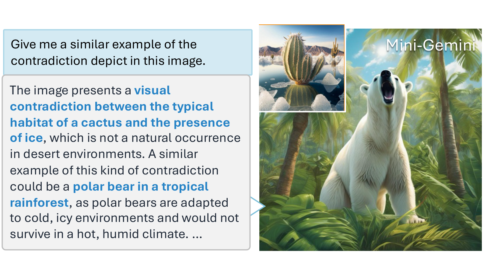
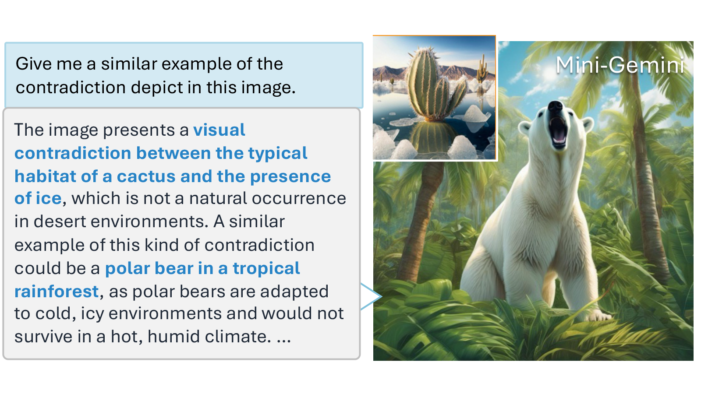

ZHANG Yuechen
Hi! I am a Research Scientist in Multi-Modal at Xiaomi MiMo.
I obtained my PhD from CUHK in 2025, advised by Prof. Jiaya Jia.
Before that, I received my bachelor's degree from CUHK in 2021.
I focus on autoregressive, interactive, and efficient video generation and intelligence.
I also enjoy exploring special and interesting visual effects and applications in generation tasks.


 
